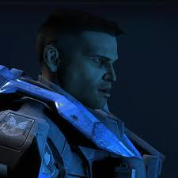
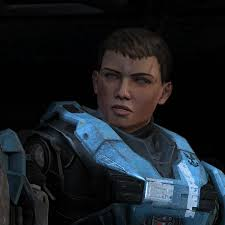
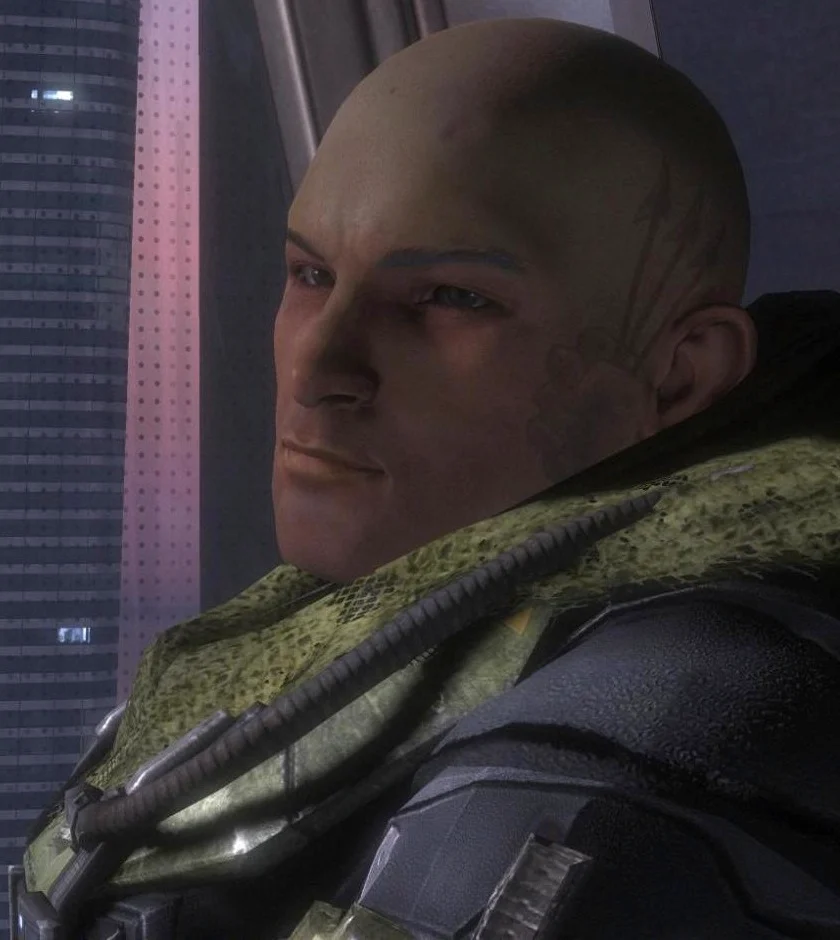
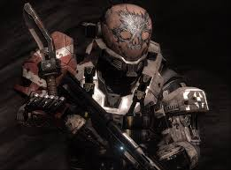
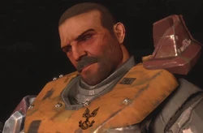
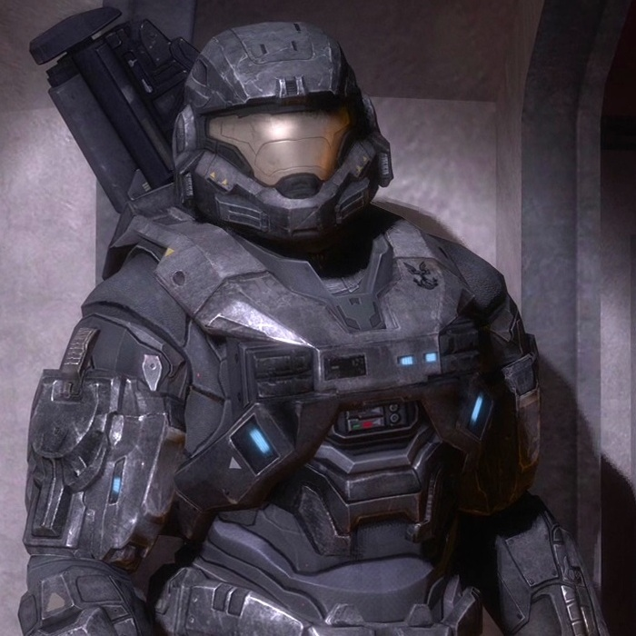

Noble 1 Carter
Líder da Equipe Noble. Se sacrificou para abrir caminho para Noble 4 e 6 chegarem a Pillar of Autumn. Suas Ultimas palavras foram: "Você está sozinho Noble, Carter Desligo.
Noble 2 Kat
Braço direito de Carter Noble 1 e a especialista em tecnologia e invasão da equipe, morreu com um tiro de carabina na cabeça de um sniper em um phantom estrategicamente posicionado em cima da rota de fuga da equipe noble durante a fuga. Suas ultimas palavras foram questionando as ultimas ordens recebidas do comando, o questionamento foi interrompido pelo disparo.
Noble 3 Jun
Noble 3 Jun é o sniper da equipe Noble e também único sobrevivente dos eventos de Reach. Ele escapou junto a Halsey e futuramente veio a participar do projeto Spartan 4 como recrutador.
Noble 4 Emile
Noble 4 Emile era o membro mais assustador da equipe Noble, ele morreu perfurado no meio do peito por uma lâmina de plasma, porém antes de morrer ele matou o Elite que havia pego ele desprevinido. As últimas palavras foram "estou pronto, e você?”.
Noble 5 Jorge
Noble 5 Jorge era o único Spartan 2 da equipe e também o único que nasceu em Reach. Jorge morreu se sacrificando para ativar a "bomba" na nave covenant "Longa Noite de Consolo" para derrubá-la. Ele acreditava que venceriam a guerra com isso, porém seu esforço foi em vão, pois logo em sequência uma frota de naves do mesmo porte chegaram em Reach. Suas últimas palavras foram "Diga a eles para fazerem valer a pena".
Noble 6
Noble 6, o membro mais novo da equipe foi o último a morrer,após entregar a Ia Cortana para o comandante da Pillar of Autumn ele ficou no planeta para garantir uma rota de fuga segura a Pillar of Autumn. Ele consegue cumprir sua missão. Se encontrando sozinho em Reach, vendo o planeta ser completamente tomado e pouco a pouco sucumbindo ao covenant, Noble 6 sem opções cai de cabeça na batalha e morre.